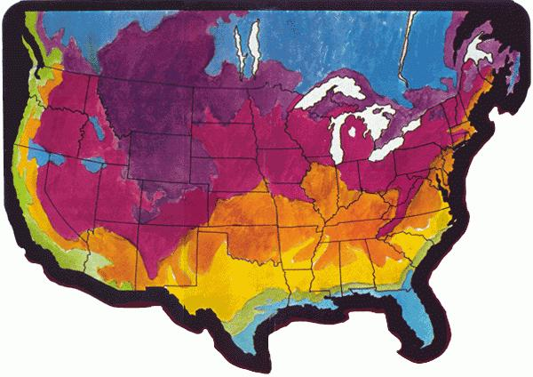

Shades of World War II and the victory garden! Once again our national leaders (and our own common sense) are urging us to grow as much of our own food as possible. Which makes this a good time for a serious look at the available garden space.. and some serious thought about how to use it effectively.
The smallness of your plot-if it is small-needn't deter you. (In fact-if you haven't gardened before-the limitation may be a blessing. Beginners are inclined to bite off more than they can chew.) Tiny backyard patches have been known to produce amazing harvests under close cultivation. This poster mentions just a few of the ways to stretch your land's growing power without drugging or exhausting the soil. There are many more... and all depend on careful planning.
Effective gardening, in fact, begins on paper ... with some thoughtful hours spent in harmonizing your needs and likings, your plot's potential, and the requirements of various crops.
At this stage it's important to keep a firm grip on reality. No matter how delicious the big watermelon on the seed packet looks, it won't grow for you unless you can count on at least 4 frost-free months. And it's surprisingly easy to get carried away by visions of 40 pound Hubbards and forget that nobody in your family really likes squash that much.
Try for a range of crops that provides as many essential nutrients as possible. (Any good handbook on the subject will tell you the food values of various fruits and vegetables.) If you keep small stock-or plan to-you can raise part of their rations too... even if it's only a few plant of comfrey for rabbits or chickens.
Also think ahead to the coming winter and plant with an eye to your storage facilities. A freezer is a blessing, of course, but it's best not to depend on that alone. And if you're without electricity, you'll want to plant crops that may be canned, dried, or stashed in a root cellar.
Incidentally, off-season is the time to buy canning jars...and you can expect other gardening supplies to be scarce and expensive this year. (In some areas, it's the early worm that gets the onion sets... at a fancy price, too.) Fortunately, many needs can be scrounged: pea supports, tomato stakes, tin cans to ward off cutworms, plastic jugs to shield tender plants on a cold night, etc.
Finally, and most important of all, work hard at building your soil. Its power to sustain life in the future depends on how you treat it now... and is the true measure of your skill as a gardener.
Further information on gardening by the organic method can be obtained from Rodale Press, Emmaus, Pennsylvania 18049. this organization is the publisher of Organic Farming and Gardening Magazine and many excellent books in the same field.
PEAS, April 1, 2 double rows 6" apart, 2-1/2' between pairs of rows. SNAP BEANS, June 15, 2 rows.
SPINACH, April 1, 2 double rows 6" apart, 2-1/2' between pairs of rows. Interplant TOMATOES, May 15, 12 staked plants per double row.
CARROTS, April 1.
CARROTS, April 1. RUTABAGAS, July 1.
BEETS, April 1. CARROTS, July 15.
BEETS, April 1. CARROTS, July 15.
SWISS CHARD, April 1, 15' of row. PEPPERS, May 15/5 plants 2' apart.
CABBAGE, April 1, 12 plants. Interplant LETTUCE, RADISHES, or ONION SETS.
BROCCOLI, April 1, 12 plants. Interplant LETTUCE, RADISHES, or ONION SETS.
SNAP BEANS, May 1. Second planting July 10.
CORN, half row May 1, other half May 10. KALE, August 15, 12 plants.
CORN, half row May 1, other half May 10. LATE LETTUCE, RADISHES, or ENDIVE, August 15.
LIMA BEANS, May 10.
SNAP BEANS, May 10. CABBAGE, July 15, 12 plants.
SNAP BEANS, May 10. Second planting July 15.
SNAP BEANS, May 20. BEETS, July 15, 2 rows 15" apart1
LIMA BEANS, May 20.
LIMA BEANS, May 30.
CORN, half row May 20, other half May 30. SPINACH, August 20.
CORN, half row May 20, other half May 30. SPINACH, August 20.
The above map is divided into seven areas on the basis of average climate, and the sections that follow should give you an idea of the normal gardening schedule for each area in the first six months of the year. Please note: The weather can fool you at the best of times and is especially unpredictable at present, In an unsettled period the instincts of experienced local gardeners are your most trustworthy guide.
1 Since average last frost in your section of the continent isn't until June, you Northern gardeners won't be seeing much outdoor action during the period covered in this chart. Watch the condition of the soil and turn under weeds and cover crops when the ground can be worked. In the milder regions, peas and root crops can be planted in April (or when the earth is dry enough), and tomatoes can be set out in May if you're careful to protect them on cold nights. Elsewhere, lettuce, onion sets, and root crops may be planted in June and beans, squash, sweet corn, and cucumbers can go into the ground as the weather warms up late in the month.
2 Weeds and cover crops should be turned under as soon as the soil can be worked. Although frost is a possibility until the end of May, spinach and peas won't be harmed by a cold snap and can be planted in March if the earth is tillable. Lettuce, onion seed, and onion sets follow in April or early May. Tomatoes can be set out in May in milder areas, but stand by with protective covers in case the weather takes a turn for the worse. Beans, corn, and squash may be sown toward the end of the month, and tender crops such as peppers, eggplants, cucumbers, sweet potatoes, and lima beans can follow when the ground is well warmed and all danger of frost is past . . . by June in all but the coldest areas. June is also the time to make second sowings of corn and bush beans, and to start seeds for late cabbage, Brussels sprouts, cauliflower, and celery.
3 Last frost usually strikes here between April 10 and April 10 and May 19 . . . but even in January you can plant peas and hardy root crops outdoors for a very early start. More conservative gardeners save pea planting for March, which is also the time to put in spinach seeds and onion sets, uncover and thin strawberry beds, and start tomatoes, and eggplants indoors. In the Central States, it's traditional to get onions, lettuce, carrots, radishes, and turnips into the ground when the maples bloom. The first of the bush beans, corn, and squash can be sown by the end of April if weather permits. Tomatoes go outdoors in May . . . but be ready to cover the plants in a cold spell. Tender vine crops should wait until all danger of frost has passed. In June, plant sweet potatoes and hotweather crops and sow seeds for late plantings of cabbage, Brussels sprouts, celery, and cauliflower. (Note for gardeners-in the Southwestern mountains: Planting dates for your area are governed by altitude. Check with your county agent on local conditions.)
4 Your area's Iast frost generally falls between March 20 and April 10 . . . which means you can start outdoor operations in February by planting rhubarb and asparagus roots, setting out cabbage plants, and sowing early crops like peas and spinach. Peppers and tomatoes can be started indoors toward the end of the month. In March, sow root crops, leafy vegetables, and members of the onion and cabbage families. In April, tomatoes may be set out in sandy-loam soils if care is taken to guard them from frost. These and other tender vegetables should wait for the end of the month in the upper South's clayloam areas. Heat-to loving crops can follow in May over most of the zone. In June, melons should be thinned to a couple of plants per hill. The sun will be getting hot by this time and tomato vines will appreciate some shade de in dry areas.
5 With last frost generally out of the way by March 10, you can get off to a good start in February by planting your hardier crops: rhubarb and asparagus roots, cabbage plants, and seeds of onions, roots, and leafy vegetables. Bush beans, tomatoes, squash, corn, and melons follow in the middle of March. Lima beans, okra, peppers, and pumpkins can go into the ground in May, along with additional plantings of bush beans and melons and second crops of early vegetables. Remember to thin the plants in the melon hills during June.
6 Your area is usually free of frost between February 8 and 28, and you can plant peas, collards, turnips, and kale as early as January if the ground is reasonably dry. Onion sets, head lettuce, and seeds for greens, root crops, and members of the cabbage family can follow in February, and West Coast gardeners can start artichoke beds and plant tomato seeds in cold frames. In the South, bush and lima beans may be planted in March. Melons and tender vegetables can probably be set out then, and certainly by April . . . when second sowings of bush and pole beans should also be made. If your area is dry, your tomato plants will appreciate some shade when very hot weather sets in.
7 Any frosts that hit this area should be safely out of the way by February 1, and you can get off to an early start in January with peas, potatoes, collards, turnips, and kale . ... provided that the ground isn't too wet. February is planting time for rhubarb roots, cabbage plants, and seeds for most early vegetables. Bush and lima beans follow in March, and tender crops by the end of that month or in April (which is also the time for second plantings of bush and pole beans). Summer squash and sweet potatoes can be started as late as May in northern Florida but the heat in the southern part of the state is too intense by that time to favor the planting of most other garden crops.
The sample garden plan over on the west side of this poster illustrates an important principle: succession planting. This means, a very simply, putting crops in the ground in a planned sequence.
Such a practice helps to make "more than full" use of your garden space. If the pea vines are bare by the end of June, for instance, there's no reason to leave that patch idle when it could be growing you a nice crop of green beans.
Another advantage of succession planting is that it provides a steady supply of certain vegetable over many weeks. If you get carried away some afternoon in early spring and put in a couple of full rows of lettuce, all that salad fare will be readu to pick at the same time.... and you'll have way to much and most of it will get overgrown and go to seed... and then you'll have non. The answer? Plant small amounts at two-week intervals, enjoy ths cool-weather crop until the days get hot, and then use the space for a mid-summer sowing of carrots or whatever.
An alternative called interplanting is shown on the suggested garden layout. In this case, lettuce is sown among the slow-growing cabbages and will be out of the way by the time its neighbors are big enough to need the room.
The most important fact about soil is that it's alive. Every square inch of good garden earth seethes with complex interactions that aren't yet fully understood. Which is why the organic gardener avoids oversimplified chemical soil treatments and builds up his land by imitating nature's methods.
Your first job in cultivating a new plot is to get acquainted with your dirt. Is the land clay, sand, or one of the mixtures called loarns? Especially at first, you'll have to respect the preferences of various crops (root vegetables, for instance, do well in sandy earth and badly in clay) and go in more heavily for those that are suited to your patch.
A soil test (purchase a kit, or contact your nearest agricultural extension service) will tell you whether the earth is acid or alkaline and whether it's seriously lacking in the major elements. Deficiencies can be corrected with powdered rock and other natural sources of minerals, but often tend to straighten out as organic matter is added to the soil.
Ideally, your plot should contain about 5 percent humus (decayed organic matter). To reach that level will probably mean several years of turning under green manure crops and adding composted animal and vegetable wastes to the soil. (These days, some gardeners just cover the whole area yearly with a heavy layer of mulch and let the material decompose from season to season.)
For advice on building your earth with natural methods, see The Complete Book of Composting by JI Rodale and staff, Rodale Books, Inc., 1970.
Important: Gardening timetables deal with averages. Real-life weather varies, and so do planting times. You can't put seeds in waterlogged soil no matter what the calendar says. Earth with the right moisture content will form a ball when squeezed in the hand and crumble when the pressure is released.
Respect the directions on the seed packet when you plant, but also remember your own garden's special conditions. Soil rich in humus, for example, can sustain closer planting than poor earth. And be sure to leave room between rows for any mechanical cultivator you mean to use later on.
It's important to mark those rows clearly as the work proceeds . . . and hang on to your original plan, to help you lay out next year's garden with an eye to crop rotation.
"No man is an island". . . and no plant, either. Most garden crops "like" some of their neighbors better than others and thrive in well-chosen combinations. Such interactions aren't fully understood by any means and you'll need to consult a more detailed guide to appreciate the subtleties of this subject. (Companion planting is a specialty of gardeners who follow the Bio-Dynamic method, and information can be obtained from Bio-Dynamic Farming and Gardening Association, RD 1, Stroudsburg, Pennsylvania 18360.) Meanwhile, here are a few rules of thumb just to get you started.
Plants often enjoy good relationships based on different requirements or habits of growth. Beans, for instance, like the support of cornstalks (be sure to give the "poles" a head start!) and help the heavy-feeding corn by adding nitrogen to the soil. Carrots thrive in the cool shade of pea vines (where a sun-loving crop would be in serious trouble). On the other hand, sunflowers and pole beans compete for light and root space and do poorly together.
Togetherness is also a bad plan for crops that have the same enemies . . . in particular, tomatoes, potatoes, and peppers. These should be planted in different parts of the garden (and don't put the tomatoes in last year's spud row).
Other combinations have the opposite effect: One partner wards off the other's enemies. Try chives or garlic, for example, to keep aphids out of the lettuce bed. Sometimes the protection works two ways: Mexican bean beetles avoid the potato patch and Colorado potato beetles find bean plants quite objectionable . . . a good point to keep in mind if such pests are a problem in your area.
Aromatic herbs seem to scare off many garden pests. Remember, though, that some crops are picky about their herbal neighbors. Dill, sage, peppermint, and rosemary are good company for the cabbage family, but carrots don't like dill and cucumbers react badly to most pungent plants.
Finally, don't forget the value of some weeds as companions. The tong-rooted types, especially, bring up minerals from the subsoil and loosen the earth for the less vigorous garden crops. You can't let the wild plants take over, of course . . . but think before you pull.
|
 |
|
|